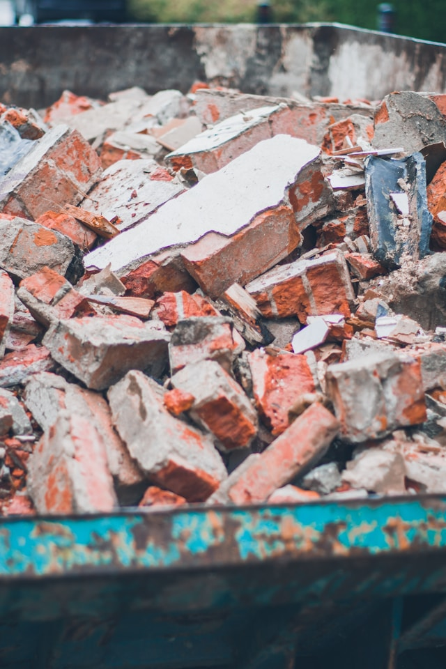
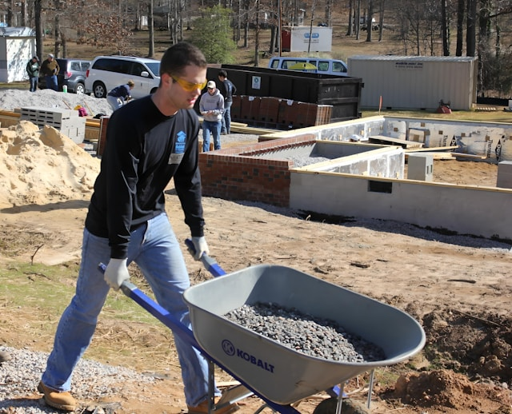

Serviço de Bota-Fora
A MonteSanto Locações oferece soluções completas em remoção e descarte de resíduos, garantindo um serviço eficiente e ambientalmente responsável para obras e reformas.
Por que escolher nosso serviço?
- Remoção rápida e eficiente
- Descarte ambientalmente correto
- Documentação e certificados
- Equipe especializada
- Atendimento ágil
Transporte Seguro
Frota própria e equipada para qualquer volume
Descarte Legal
Destinação adequada conforme normas ambientais
Documentação
Emissão de todos os certificados necessários
Nossos Serviços

Remoção de Entulhos
Serviço especializado para remoção de resíduos de construção e demolição. Ideal para:
- Obras e reformas
- Limpeza de terrenos
- Demolições
Atendimento rápido
Diversos volumes

Limpeza de Obras
Serviço completo de limpeza e remoção pós-obra. Perfeito para:
- Finalização de obras
- Limpeza pesada
- Preparação de ambientes
Limpeza completa
Serviço garantido
Descarte Especializado
Destinação correta de resíduos específicos. Indicado para:
- Materiais especiais
- Resíduos industriais
- Documentação específica
Certificação
Sustentável
Precisa de algum desses serviços?
Entre em contato conosco para um orçamento personalizado